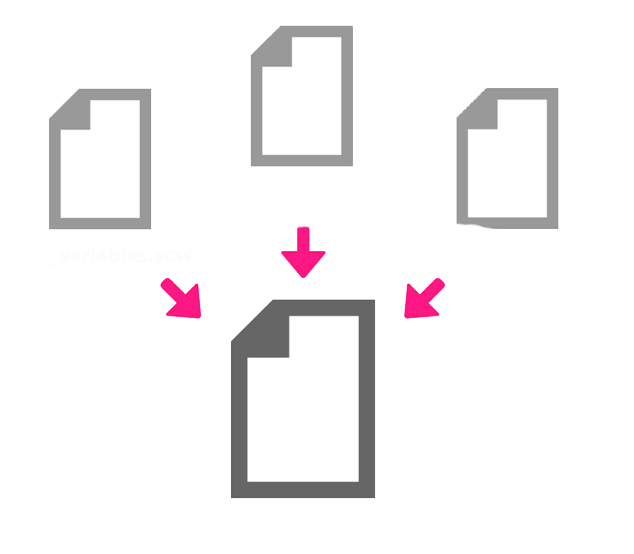

Kick Ass with Sass
Who Are We
Lauren Byrwa
@labyrwa
Front End Developer at Palantir.net
Heather Rodriguez
@hrodrig
Web Developer at Rock Creek Strategic Marketing
Slides
What is Sass?
Sass is CSS Extended
Sass is a lean, clean CSS extension language:
You write Sass; your browser sees CSS.
What you write
$bold: 700;
$link-color: #33CCFF;
$sans-serif: 'Arial, Helvetica, sans-serif';
body {
font-family: $sans-serif;
a {
font-weight: $bold;
color: $link-color;
}
ul {
list-style-type: none;
}
}
What the browser sees
body {
font-family: "Arial, Helvetica, sans-serif";
}
body a {
font-weight: 700;
color: #33ccff;
}
body ul {
list-style-type: none;
}
Sass Facts
- Sass is implemented through a Ruby gem
- Stands for "Syntactically Awesome Stylesheets"
- Designed by Hampton Catlin and developed by Natalie Weizenbaum in 2007
- The most widely used CSS preprocessor within our community
Why Sass?
The problem with CSS
- Repetitive and messy
- Bad coupling (especially in Drupal)
- Bloated code
- Difficult to maintain
- Bad for performance
Fight back with Sass!
Benefits of using Sass
- Write fewer lines of code with less repetition (stay DRY!)
- Change values in one place; watch them update everywhere!
- Spend less time in development
- Improve site performance
- Organize files for better maintainability
- Use cool features such as functions and mixins absent from CSS
#winning
Features
Variables
Variables store small pieces of information for reuse throughout your stylesheets.
- Colors
- Font stacks
- Breakpoints
- Common font sizes
$variable-name: code;
// Fonts
$nimbus-sans: "nimbus-sans", Times, serif;
$bold: 500;
$normal: 400;
$light: 300;
// Colors
$highlight-color: #ffca0a;
$link-color: #ff0000;
$black: #000000;
$white: #ffffff;
$charcoal: darken($white, 70);
SCSS
// Fonts
$nimbus-sans: "nimbus-sans", Times, serif;
$highlight-color: #ffca0a;
$bold: 500;
blockquote{
font-family: $nimbus-sans;
color: $highlight-color;
font-weight: $bold;
}
CSS
// Colors
blockquote{
font-family: "nimbus-sans", Times, serif;
color: #ffca0a;
font-weight: 500;
}
Operators
Math is hard. Let Sass take care of the work.
SCSS
.container{
width: 100%;
}
article[role=”main”]{
float: left;
width: 600px / 960px * 100%;
}
aside[role=”complimentary”]{
float: right;
width: 300px / 960px * 100%;
}
CSS
.container{
width: 100%;
}
article[role=”main”]{
float: left;
width: 62.5%;
}
aside[role=”complimentary”]{
float: left;
width: 31.25%;
}
Nesting
Visual hierarchy makes it easy to understand and organize selector relationships.
SCSS
.breadcrumb {
font-size: .8em;
margin-bottom: 2rem;
li {
display: inline;
list-style-type: none;
margin: 0;
padding: 0;
}
a{
color: $mirage;
}
}
CSS
.breadcrumb {
font-size: .8em;
margin-bottom: 2rem;
}
.breadcrumb li {
display: inline;
list-style-type: none;
margin: 0;
padding: 0;
}
.breadcrumb a{
color: $mirage;
}
Nest Sparingly and avoid overly specific code
Ampersand (&)
Use to merge two selectors, either preceding or following an element.
Use Cases:
- Pseudo elements
- Hover and focus states
- Modernizr, HTML5 Boilerplate, Google Webfont loader classes
Preceeding Ampersand (&)
SCSS
.menu a{
color: $crimson;
&:hover{
color: $white;
}
}
CSS
.menu a{
color: #ed1c24;
}
.menu a:hover{
color: #ffffff;
}
Trailing Ampersand (&)
SCSS
.accordion__header{
margin: 0;
background: url(../images/retina/accordion-down.png) no-repeat;
background-size: 13px;
.lt-ie9 &{
background: url(../images/ie/accordion-down.png) no-repeat;
}
}
CSS
.accordion__header {
margin: 0;
background: url(../images/retina/accordion-down.png) no-repeat;
background-size: 13px;
}
.lt-ie9 .accordion__header {
background: url(../images/ie/accordion-down.png) no-repeat;
}
Partials
Split your CSS into smaller, more maintainable snippets
Partials are NOT standalone CSS files
_filename.scss
_alerts.scss
_buttons.scss
_checkboxes.scss
_footer.scss
_forms.scss
_icons.scss
_menus.scss
_messages.scss
_throbbers.scss
_typography.scss
Import
- Use @import to combine partials into one file
- One HTTP request per non-partial file
- CSS uses @import but creates many HTTP requests
@import "base";
@import "reset";
@import "layouts/responsive";
@import "components/header";
@import "components/navigation";
@import "components/messages";
@import "components/tabs";
@import "components/morelinks";
@import "components/blocks";
@import "components/unpublished";
@import "print";
Mixins

- Groupings of CSS declarations you define once and reuse throughout website
- Can include variables
- Use cases:
- retina sprites
- clearfix
- breakpoints
- CSS3/Vendor prefixes
Mixin
@mixin border-radius($radius) {
-webkit-border-radius: $radius;
-moz-border-radius: $radius;
-ms-border-radius: $radius;
border-radius: $radius;
}
SCSS
.hover-content--featured{
@include border-radius(10px);
background: $viking;
font-size: 1.333333333rem;
font-weight: $semibold;
height: 100%;
}
CSS
.hover-content--featured{
-webkit-border-radius: 10px;
-moz-border-radius: 10px;
-ms-border-radius: 10px;
border-radius: 10px;
background: $viking;
font-size: 1.333333333rem;
font-weight: $semibold;
height: 100%;
}
Extend/Inheritance
Using @extend lets you share CSS properties from one selector to another.
It really helps keep your CSS DRY.
SCSS
.btn{
background: $whitesmoke;
color: $mirage;
padding: .6rem .8rem;
padding-right: 2.666666667rem;
}
.btn--expand{
@extend .btn;
background: $crimson;
padding-right: 2.133333333rem;
}
CSS
.btn,
.btn--expand{
background: $whitesmoke;
color: $mirage;
padding: .6rem .8rem;
padding-right: 2.666666667rem;
}
.btn--expand{
background: $crimson;
padding-right: 2.133333333rem;
}
When do you use a @mixin vs @extend?
@mixin repeats the code every time and the CSS gets bloated
@extend will add the selectors together and then output the code just once
Mixin - SCSS
@mixin element-invisible{
position: absolute;
height: 1px;
width: 1px;
overflow: hidden;
}
.foo{
@include element-invisible;
}
.bar{
@include element-invisible;
}
Mixin - CSS
.foo{
position: absolute !important;
height: 1px;
width: 1px;
overflow: hidden;
}
.bar{
position: absolute !important;
height: 1px;
width: 1px;
overflow: hidden;
}
Extend - SCSS
.element-invisible{
position: absolute !important;
height: 1px;
width: 1px;
overflow: hidden;
}
.foo{
@extend element-invisible;
}
.bar{
@extend element-invisible;
}
Extend - CSS
.element-invisible,
.foo,
.bar{
position: absolute !important;
height: 1px;
width: 1px;
overflow: hidden;
}
So really, when do you use @mixin vs @extend?
ANSWER:
%placeholder with @extend
Placeholder
Using placeholder (%) with @extend lets you combine the selectors
No worries about unused selectors
SCSS
%element-invisible{
position: absolute !important;
height: 1px;
width: 1px;
overflow: hidden;
}
.foo{
@extend element-invisible;
}
.bar{
@extend element-invisible;
}
CSS
.foo,
.bar{
position: absolute !important;
height: 1px;
width: 1px;
overflow: hidden;
}
So when do you use each?
Mixin:
When you use a variable or the output changes
Extend:
when you’re using the original selector already
Placeholder:
when the code is always the same
when you don’t need the original selector
Drupal and Sass
Base themes that support Sass:
- Zen 5
- Omega 4
- Aurora
- Adaptive Theme
- and others…
Getting Started
Install Ruby
- Macs already come with Ruby (win for us!)
- Download Ruby for PC
Open Terminal and run a short command
gem install sassYAY! YOU’VE INSTALLED SASS
Compiling your Sass
Sass can compile itself
sass --watch path/sass-directorySo can libraries such as Compass or Bourbon, which can also add much more functionality
gem install compass
compass watch
compass compile
If you're using a task runner like Gulp and Grunt, that will compile too.
Not a Terminal fan? Try Scout or CodeKit
Sass Challenges
Nesting: can get crazy long and over specific
Versioning: Bundler to keep team members on same gem
Keep output in mind: Using @import to separate out files requires a logical structure
If you write bad CSS, you will write bad Sass
More stuff to Sass out About
Data type: a way of classifying a piece of information. Common examples in programming are booleans, strings and integers
Control structure: instruction to the computer on how to evaluate a piece of data.
Data Types & Control Structures
Data Types
- Numbers
- Strings
- Colors
- Booleans
- Null
- Lists
- Maps
Control Structures
- @while
- @for
- @if/@elseif/@else
- @each
Lists and Maps
Lists = arrays
Maps = hashes
$social: (
"facebook": '\f204',
"twitter": '\f202',
"linkedin": '\f207',
"pinterest": '\f209',
"github": '\f200',
"dribbble": '\f201',
"instagram": '\f215',
"email": '\f410'
);And can also be multidimensional
$mega-social: (
"facebook": ( content: "\f204", coords: 0 0 ),
"twitter": ( content: "\f202", coords: 0 -64px ),
"linkedin": ( content: "\f207", coords: 0 -128px )
);@each
Mixin
@each $network, $content in $social {
.#{$network} a:before {
content: $content;
}
}CSS
.facebook a:before {
content: '\f204';
}
.twitter a:before {
content: '\f202';
}
.linkedin a:before {
content: '\f207';
}
...Resources to learn more
- Sass Documentation (Data Types)
- Sass Maps Are Awesome! - Viget
- Maptastic Maple - The Sass Way
- Sass Documentation (Control Directives & Expressions)
- Sass control directives - The Sass Way
- The Future of Sass - David Walsh